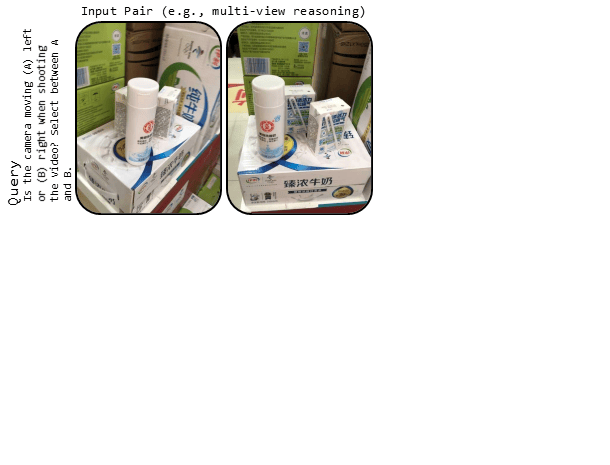
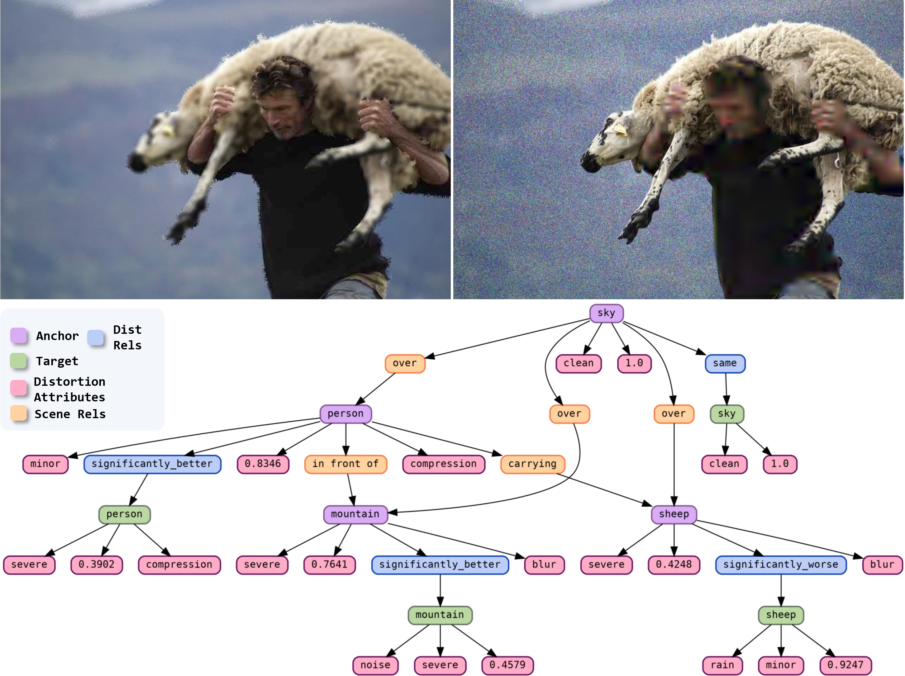
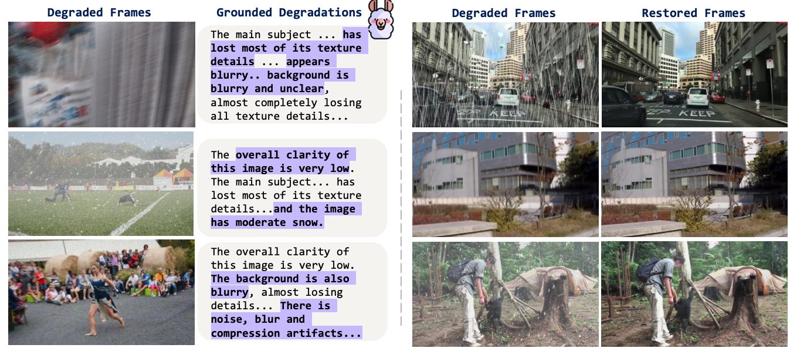
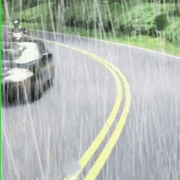
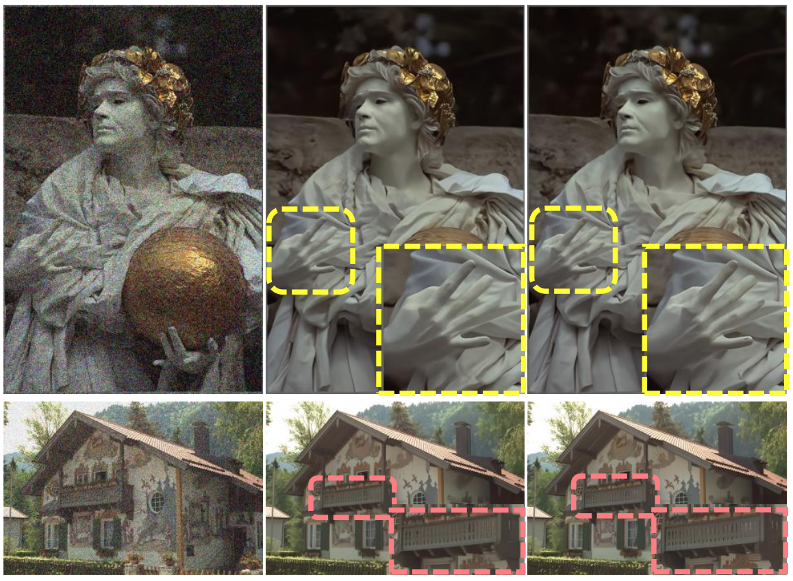
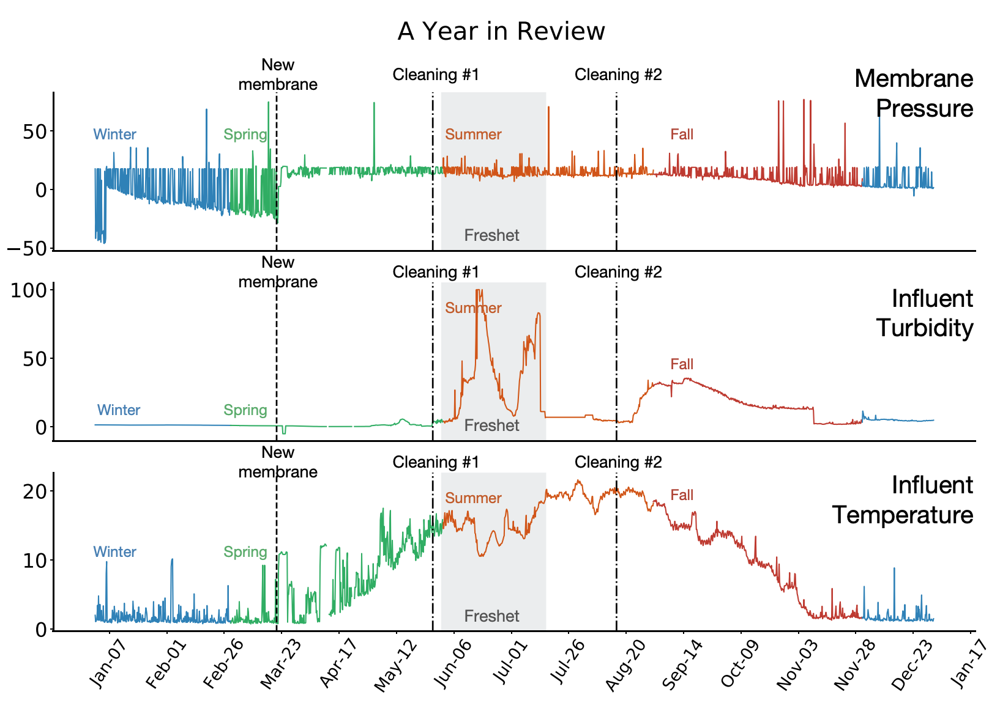

|
Muhammad Kamran Janjua
Art is Long; Time is Fleeting!
I am a Machine Learning Researcher @ Huawei, Canada.
I work on video understanding and online learning problems.
Previously, I was a graduate student at University of Alberta, where I worked on continual learning.
Email /
CV /
Google Scholar /
Github
|
|
|
Recent Research Work
I am interested in problems in perception and learning.
|
|

|
Unlocking Visual Tool Reasoning in Language Models via Perception Programs
Muhammad Kamran Janjua*,
Hugo Silva*,
Di Niu,
Bahador Rashidi (* Equal Contribution)
IEEE/CVF Conference on Computer Vision and Pattern Recognition (CVPR), 2026
We argue that, in problems where vision tools can provide the necessary visual cues, the bottleneck is how tool outputs are represented ("representation mismatch").
We introduce Perception Programs, a training-free, model-agnostic method that rewrites tool outputs into compact, structured, language-native summaries that MLLMs can directly parse and reason over.
|
|

|
Panoptic Pairwise Distortion Graph
Muhammad Kamran Janjua,
Abdul Wahab,
Bahador Rashidi
International Conference on Learning Representations (ICLR), 2026
We propose a novel task of Distortion Graph (DG). DG treats paired images as a structured topology grounded in regions, and represents dense degradation information such as distortion type, severity, comparison and quality score in a compact interpretable graph structure.
|
|

|
Grounding Degradations in Natural Language for All-In-One Video Restoration
Muhammad Kamran Janjua*,
Amirhosein Ghasemabadi*,
Kunlin Zhang,
Mohammad Salameh,
Chao Gao,
Di Niu (* Equal Contribution)
IEEE/CVF Winter Conference on Applications of Computer Vision (WACV), 2026
We propose an all-in-one video restoration framework that grounds degradation-aware semantic context of video frames in natural language via foundation models, offering interpretable and flexible guidance.
|
|

|
Learning Truncated Causal History Model for Video Restoration
Amirhosein Ghasemabadi*,
Muhammad Kamran Janjua*,
Mohammad Salameh,
Di Niu (* Equal Contribution)
Neural Information Processing Systems (NeurIPS), 2024
We propose Turtle to learn the truncated causal history model for online video processing. The causal design in Turtle enables recurrence in inference through state-memorized historical features while allowing parallel training by sampling truncated video clips. We report new state-of-the-art results on a multitude of video restoration benchmark tasks.
|
|

|
CascadedGaze: Efficiency in Global Context Extraction for Image Restoration
Amirhosein Ghasemabadi,
Muhammad Kamran Janjua,
Mohammad Salameh,
Chunhua Zhou,
Fengyu Sun,
Di Niu
Transactions on Machine Learning Research (TMLR), 2024
We present CascadedGaze Network (CGNet), an encoder-decoder architecture that employs Global Context Extractor (GCE), a novel and efficient way to learn global information for image restoration.
|
|

|
GVFs in the Real World: Making Predictions Online for Water Treatment
Muhammad Kamran Janjua,
Haseeb Shah,
Martha White,
Erfan Miahi,
Marlos C Machado,
Adam White
Machine Learning, 2023
We show the importance of learning in deployment, by comparing a TD agent trained purely offline with no online updating to a TD agent that learns online. This final result is one of the first to motivate the importance of adapting predictions in real-time, for non-stationary high-volume systems in the real world.
|
|
{kind=link}